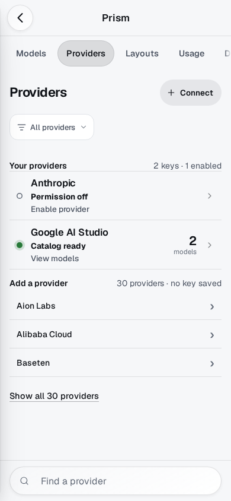
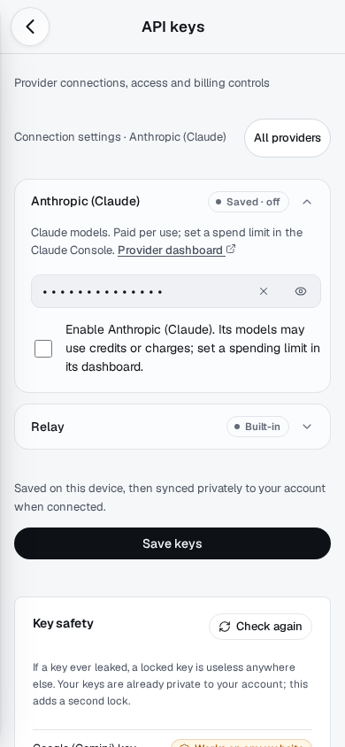

LUMEN · PHASE 4 SLICE 2 · CHECKPOINT 2 · REVIEW ONLYProviders, with a clear next step.
CP1 is released. This provider increment is a draft for owner/planner review, with no merge or deployment. Models and routing policy behavior are preserved; CP3 has not begun.
Actual browser captures, synthetic accounts and intercepted catalog requests. Catalog success proves discovery only. Physical iPhone Safari, PWA, VoiceOver and genuine provider connectivity are unverified. Images are captured at their stated viewport; tap to open the original file. Exact source/build/image provenance.
Readiness → action → models
The previous phone detail spent its first screen on duplicated identity and four secondary facts. Models now follow the setup/action directly; timestamps, reply-test limitations and usage provenance remain in an accessible disclosure.
Provider directory and direct settings
Saved keys and enabled permissions have distinct labels. Each configured provider has one factual verdict and next step. A provider action opens its existing masked configuration; All providers remains available, with the relay disclosure and original save/permission controls intact.

Directory: saved keys, permission and next action · Chromium · 390×844 Light
Direct, masked provider settings · Chromium · 390×844 LightHonest short-phone states
Disabled, refused and unchecked states lead to the relevant existing controls. No saved key, discovered model or cached catalog is promoted to verified inference. Additional empty and stale states are retained in automated evidence.
Desktop and larger-phone continuity
The split view remains useful. With no relevant current provider, the detail invites deliberate selection rather than choosing an alphabetical provider.
Try during review
- In Prism → Providers, compare Saved keys and Enabled providers filters; search for a provider and clear the query.
- Open a disabled provider, choose Enable provider, inspect its masked settings, then Back and Forward. Choose All providers and repeat Back/Forward.
- On a synthetic catalog failure, confirm Review key or Refresh model list is the relevant recovery, with raw server errors hidden.
- Return to chat and check your unsent draft. At 320px open Models and confirm a usable model row remains above Search.
Automated evidence and limitations: checkpoint report. Actual device keyboard/edge-swipe/VoiceOver behavior still needs the owner's private iPhone pass. No automatic CP3 continuation.